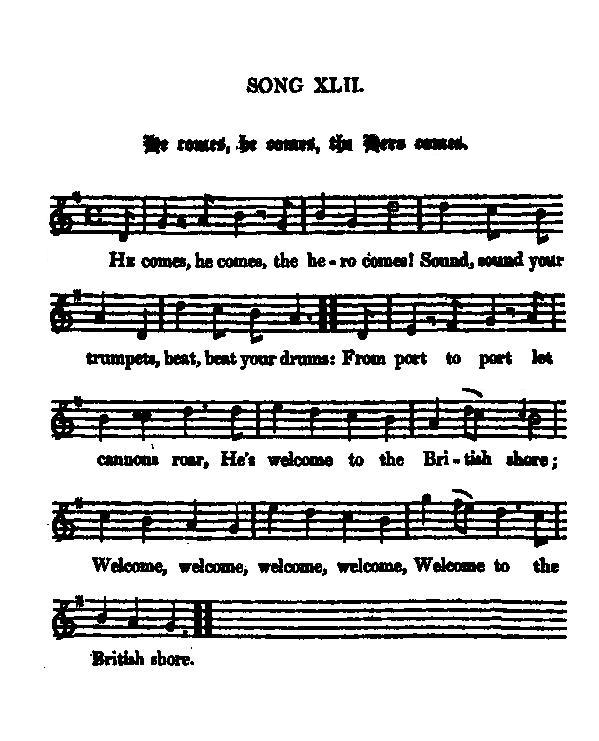

He come, he comes the Hero comes
La venue du héros
L'attente de Charlie
Tune - Mélodie"He come, he comes the Hero comes"
from Hogg's "Jacobite Relics" 2nd Series N°42 page 82
Sequenced by Christian Souchon

|
To the tune:
From Sir W. Scott's loose papers. The air does not appear to be a genuine Scottish one. Source: James Hogg's "Jacobite Relics, 2nd series", 1821 |
A propos de la mélodie:
Tiré des papiers non reliés de Sir W. Scott. L'air ne ressemble pas à un véritable air écossais. Source: James Hogg's "Jacobite Relics, 2nd series", 1821 |

|
HE COMES, HE COMES, THE HERO COMES
1. He comes, he comes! The hero comes! Sound, sound your trumpets, beat, beat your drums: (twice) From port to port let cannons roar, He's welcome to the British shore Welcome, welcome, welcome, welcome, Welcome to the British shore. (twice) 2. Prepare, prepare, your songs prepare, Loud, loudly rend the echoing air ; From pole to pole his fame resound, For virtue is with glory crown'd, Virtue is with glory crown'd. Virtue is with glory crown'd. 3. To arms, to arms, to arms repair ! Brave, bravely now your wrongs declare : See godlike Charles, his bosom glows At Albion's fate and bleeding woes, At Albion's fate and bleeding woes. At Albion's fate and bleeding woes. 4. Away, away, fly, haste away ! Crush, crush the bold usurper's sway ! Your lawful king at last restore, And Britons shall be slaves no more, Britons shall be slaves no more. Britons shall be slaves no more. Source: "The Jacobite Relics of Scotland, being the Songs, Airs and Legends of the Adherents to the House of Stuart" collected by James Hogg, published in Edinburgh by William Blackwood in 1819. |
LA VENUE DU HEROS
1. Le héros vient: nous l'acclamons! Battez tambours et sonnez trompettes: (bis) De port en port, tonnez canons! Que nos rivages lui fassent fête! Vivat, vivat, vivat, vivat! Bienvenue chez les Britons! (bis) 2. Préparez vos hymnes, vos chants Que les airs de leurs échos résonnent! D'un pôle à l'autre on va vantant Sa vertu que la gloire couronne. Oui, couronnée par la gloire, Que le monde entier va chantant. 3. Courez aux armes, courez tous! Clamez vos maux, O foules vaillantes! Charles lui-même est en courroux De voir Albion et ses plaies sanglantes La vue de ces plaies sanglantes Met Charles lui-même en courroux! 4. Va-t-en, va-t-en, traître, va-t-en! Plus d'usurpation ni d'arbitraire! Restaurons le vrai souverain! A l'esclavage il faut nous soustraire! L'asservissement indigne, Britanniques, doit prendre fin! (Trad. Christian Souchon (c) 2010) |